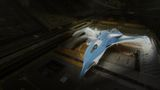

Hardpoints
3L · 3M (3 medium Gauss)
Three medium mounts feed a full triple-Gauss heart-cracking battery, three large mounts add AX multi-cannons, and Imperial pace lets the Corsair dodge the lightning that staggers heavier hulls. Ten optional internals carry a deep shield/hull tank and Guardian hardening despite the ship having no military slots and no fighter bay — the two omissions that hold it just behind the Chieftain, Krait and Challenger. No rank, no permit, just a steep price.

This ship's 1–100 suitability rating reflects its fully-engineered fit for this role, scored against every ship in the role. See how ships are rated.
Point Gutamaya's modern combat medium at the Thargoids and you get a fast, well-armed AX skirmisher. Three medium hardpoints carry a full triple-Gauss battery — the meta heart-cracking weapon — while three large mounts add Enhanced AX multi-cannons for sustained hull damage. Imperial speed and good agility let it bob and weave through an Interceptor's lightning the way the agile mediums do, and ten optional internals (deep for a combat hull) give it the room to tank with shields, hull reinforcement and Guardian hardening at once.
The reason it sits at 84 rather than alongside the top AX mediums is specific and honest: the Corsair has no military slots and no fighter bay. Module hardening — the Guardian Module Reinforcement that keeps Thargoid lightning from stripping your kit — has to come out of the same optionals you want for shields and hull, and there is no SLF decoy to split a swarm. The Chieftain, Krait Mk II and Challenger all bring at least one of those advantages, so they edge ahead. The Corsair answers with three native Gauss mounts, raw speed and internal depth — and no rank or permit gate.
Mobile anti-Xeno work: Interceptor hunts where you dodge rather than soak, AX Conflict Zone skirmishing, and any sortie where a fast, six-mount Gauss platform with deep internals wants to control range and stay out of the lightning.
Four things make the Corsair a capable Xeno hunter:
The Corsair has no military slots, so its Guardian Module Reinforcement competes for the same optionals as its shield and hull tank — you can't harden as freely as a Chieftain or Challenger. It also has no fighter bay for a decoy, only a medium-grade base hull (270 armour / ~235 MJ shield), and at ~76.9M Cr it is a premium price for a medium. Its case is mobility and firepower, not soak.
Three native medium Gauss mounts and Imperial 355 m/s boost lead the score; no military slots and a medium-grade 270/~235 MJ base tank cap it at 84.
The 84/100 headline is a verdict against the anti-Xeno role's priority-ordered factors. Each factor carries a weight (its share of 100); this hull earns part of each based on how it performs against the whole field. The points sum to the rating.
| Role factor | Score | Why this score |
|---|---|---|
| Hardpoints for Gauss | 23/25 | Three medium hardpoints take a full native triple-Gauss battery with three large mounts left for Enhanced AX multi-cannons and a Guardian Plasma Charger — six mounts total, more medium Gauss than the Krait Mk II (2M) or Phantom, short only of the Gunship/Cutter four-medium ceiling. |
| Heat capacity & management | 16/20 | Heat is managed by speed plus a heat-sink launcher and Overcharged + Thermal Spread on the 7A plant, but the capacitor-hungry triple Gauss and absent military bays give no exceptional thermal margin — solidly mid-to-upper field, not class-leading. |
| Hull tank & reinforcement room | 14/20 | Ten optionals (6·6·6·5·5·5·4·3·2·1) push effective armour past ~2,500 and shield near ~900 MJ engineered, but with zero military slots and only a 270 armour / ~235 MJ base hull, Guardian MRP/HRP must compete with shield and tank for the same bays — the explicit limiter behind the Chieftain and Challenger. |
| Agility | 23/25 | 280/355 m/s with good Imperial handling, extendable to ~430 m/s boost on G5 Dirty Drives — the lead strength, letting it dodge the lightning that heavier AX hulls must absorb where the large warships cannot evade at all. |
| Caustic handling & support slots | 8/10 | Four utility mounts and the deep optionals carry an Advanced Xeno Scanner, caustic-sink launcher, decontamination limpet and stacked Guardian caustic-resistant HRP, but there is no fighter bay for an SLF decoy to split a swarm. |
| Weighted total | 84/100 | Matches the headline suitability rating for this ship in this role. |
Weights are an editorial decomposition of the role's stated priority order — not an in-game formula. Bar length shows how fully each factor is earned; the longest factors carried the score, the shortest are where it gave points away. See how ships are rated.
Both tables rate ships for anti-Xeno combat specifically. The role column is the hardpoint loadout — the basis for an AX weapon suite. Evasion, hardening and heat management matter as much as raw mounts.
| Ship | Class | Hardpoints | Pros & cons vs Corsair | Rating |
|---|---|---|---|---|
| Alliance Chieftain | Medium | 2L 1M 3S | Military slots for hardening; cheaper; very agileFewer Gauss mounts; shallower internals | 90 |
| Krait Mk II | Medium | 3L 2M | SLF decoy; deep internals; no rankNo military slots; one fewer medium Gauss mount | 89 |
| Alliance Challenger | Medium | 1L 3M 3S | Three military slots; tankier; cheaperSlower; fewer large AX mounts | 88 |
| Corsair this | Medium | 3L 3M | — this hull (baseline) | 84 |
| Krait Phantom | Medium | 2L 2M | Faster; long reach; no rankFewer mounts; no military slots; thinner tank | 84 |
| Federal Gunship | Medium | 1L 4M 2S | Maximum Gauss mounts; military slots; very toughSlow and clumsy; Federal rank gate | 82 |
Among the AX mediums the Corsair is the fast, deep-internal generalist: more native Gauss mounts than the Krait or Phantom, faster than the Challenger, roomier than the Chieftain. What costs it the points is the missing module hardening — every hull above it either has military slots or a decoy bay, and in AX that survivability matters more than an extra gun.
| Ship | Class | Hardpoints | Pros & cons vs Corsair | Rating |
|---|---|---|---|---|
| Imperial Cutter | Large | 1H 2L 4M | Highest shield tank in the game; four medium GaussImperial Duke rank; large pad; can't dodge | 90 |
| Anaconda | Large | 1H 3L 2M 2S | Eight mounts; vast internals; no rankPonderous; large pad; far harder to evade in | 88 |
| Federal Corvette | Large | 2H 1L 2M 2S | Capital tank; two military slots; eight utilitiesRear Admiral rank; large pad; too heavy to dodge | 86 |
| Type-10 Defender | Large | 4L 3M 2S | Huge mount count; enormous armour; no rankVery slow; feeble shields; large pad | 86 |
The large warships out-tank and out-mount the Corsair but need a pad and usually a rank grind, and none can dodge an Interceptor's lightning. The Corsair trades their soak for speed: it stays out of the fire rather than standing in it, fields three native Gauss from a medium pad, and asks for no rank at all.
At ~76.9M Cr the Corsair is one of the priciest combat mediums, but it carries no rank or permit gate — just credits and the Guardian/AX unlocks. A full AX fit with triple Gauss, Enhanced AX multi-cannons, a capable shield and layered Guardian reinforcement runs to roughly ~110M Cr A-rated and ~140M+ Cr engineered, with a modest medium-ship rebuy near ~7M to budget for.
You pay for speed and breadth, not survivability. If you already fly the Corsair as a combat or multipurpose medium, converting it to AX is straightforward — you keep its pace and add Gauss. If you want maximum staying power per credit, the Alliance hulls deliver most of the AX capability with military slots and a lower price.
~140M Cr engineered plus the Guardian-tech grind buys a fast, six-mount AX skirmisher with no navy ladder to climb. The rebuy is light for a ship at this firepower — you pay up front for the hull, not on every loss.
A fast AX skirmisher: triple Guardian Gauss on the medium mounts for heart damage, two Enhanced AX multi-cannons and a Guardian Plasma Charger on the large mounts for sustained hull damage, and the deep optionals carrying a bi-weave shield, Guardian module hardening and Guardian hull reinforcement to make up for the absent military slots. Initial is buy-only; A-Rated adds the unlocked AX/Guardian kit; Engineered hardens shields, hull, heat and mobility — the AX and Guardian weapons themselves cannot be engineered.
| Slot | Initial · buy-only | A-Rated · no eng | Engineered | Notes |
|---|---|---|---|---|
| Hardpoints | ||||
| Large 1 | — | 3C Enhanced AX Multi-Cannon (Gimballed) | (No blueprint available) | Enhanced (V2) AX multi-cannon, gimballed to track Interceptor drift; sustained anti-hull DPS — AX weapons carry no engineering blueprint. |
| Large 2 | — | 3C Enhanced AX Multi-Cannon (Gimballed) | (No blueprint available) | Second gimballed Enhanced AX multi-cannon doubles the sustained hull pressure between exertion phases; not engineerable. |
| Large 3 | — | 3C Guardian Plasma Charger (Fixed) | (No blueprint available) | Guardian Plasma Charger adds a charge-up burst that hits hearts and hull hard; Guardian weapons cannot be engineered. |
| Medium 1 | — | 2B Guardian Gauss Cannon (Fixed) | (No blueprint available) | Guardian Gauss Cannon — the primary heart-cracker; fixed-only, immensely capacitor-hungry, and carries no engineering blueprint. |
| Medium 2 | — | 2B Guardian Gauss Cannon (Fixed) | (No blueprint available) | Second fixed Gauss; three together crack an exerted heart in one window — manage WEP pips between shots. |
| Medium 3 | — | 2B Guardian Gauss Cannon (Fixed) | (No blueprint available) | Third fixed Gauss completes the heart battery; Gauss is the reason the distributor is A-rated first. |
| Utility Mounts | ||||
| Utility 1 | — | 0C Xeno Scanner | (No blueprint available) | Advanced Xeno Scanner reads Thargoid type and live heart count; scanners have no blueprint. |
| Utility 2 | — | 0I Caustic Sink Launcher | G1 Ammo Capacity (no experimental effect) | Optional / low-priority — Ammo Capacity adds caustic-sink charges. Clears caustic damage in Thargoid fights. |
| Utility 3 | — | 0I Heat Sink Launcher | G1 Ammo Capacity (no experimental effect) | Optional / low-priority — Ammo Capacity adds heat-sink charges. Dumps heat for silent running and Thermal-Vent resets. |
| Utility 4 | — | 0A Shield Booster | G5 Thermal Resistant + Super Capacitors | Shield Booster — Thermal Resistant against Thargoid thermal and caustic damage; the only engineered utility. |
| Core Internals | ||||
| Bulkheads | Lightweight Alloy | Military Grade Composite | G5 Heavy Duty + Deep Plating | |
| Power Plant | 7E Power Plant | 7A Power Plant | G5 Overcharged + Thermal Spread | A-rate to power Gauss, Plasma Charger, shield and cells; Overcharged adds headroom, Thermal Spread bleeds the extra heat. |
| Thrusters | 7E Thrusters | 7A Thrusters | G5 Dirty Drive Tuning + Drag Drives | A-rate + Dirty Drives — Imperial speed is this hull's survivability, so protect and extend it. |
| Frame Shift Drive | 5E Frame Shift Drive | 5A Frame Shift Drive | G5 Increased Range + Mass Manager | A-rated to reach AX zones and Maelstroms; Increased Range with Mass Manager offsets the heavy defensive fit. |
| Life Support | 4E Life Support | 4D Life Support | G5 Lightweight (no experimental effect) | D-rate to save mass, Lightweight trims more; life support has no experimental effect. |
| Power Distributor | 7E Power Distributor | 7A Power Distributor | G5 Charge Enhanced + Super Conduits | A-rate this FIRST — triple Gauss drains the class-7 weapons capacitor faster than anything else on the ship. |
| Sensors | 6E Sensors | 6D Sensors | G5 Lightweight (no experimental effect) | Drop to D and go Lightweight; AX fights are close-range, so trade sensor range for mass. |
| Fuel Tank | 5C Fuel Tank | 5C Fuel Tank | (No blueprint available) | Stock class-5 tank; fuel capacity is fixed and cannot be engineered. |
| Optional Internals | ||||
| Size 6 | 6C Bi-Weave Shield Generator | 6C Bi-Weave Shield Generator | G5 Thermal Resistant + Hi-Cap | Bi-weave regenerates fast under Thargoid fire; Thermal Resistant blunts their thermal damage and Hi-Cap adds raw MJ. |
| Size 6 | — | 6A Shield Cell Bank | G4 Specialised (no experimental effect) | Optional / low-priority — Specialised cuts the cell bank's heat and power spike. Burst shield healing for emergencies. |
| Size 6 | — | 5D Guardian Hull Reinforcement | (No blueprint available) | Guardian HRP (caps at size 5) under-fills this size-6 slot — Guardian armour resists caustic and is unlock-only, not engineerable. |
| Size 5 | — | 5D Guardian Module Reinforcement | (No blueprint available) | Guardian Module Reinforcement protects the cores from penetrating hits — the hardening the missing military slots would have given; not engineerable. |
| Size 5 | — | 5D Guardian Module Reinforcement | (No blueprint available) | Second Guardian MRP spreads internal damage further; Guardian tech carries no blueprint. |
| Size 5 | — | 5D Guardian Hull Reinforcement | (No blueprint available) | Second size-5 Guardian HRP — the bulk of the caustic-resistant effective armour; unlock-only. |
| Size 4 | — | 3E Decontamination Limpet Controller | (No blueprint available) | Decontamination Limpet Controller cleans caustic off the hull; the controller maxes at size 3, so it under-fills this size-4 slot, and limpet controllers have no blueprint. |
| Size 3 | — | 3D Guardian Hull Reinforcement | (No blueprint available) | Size-3 Guardian HRP adds more caustic-resistant armour from the mid optionals; not engineerable. |
| Size 2 | — | 2D Hull Reinforcement | G5 Heavy Duty + Deep Plating | Standard Hull Reinforcement — the one reinforcement that CAN be engineered: Heavy Duty + Deep Plating. |
| Size 1 | — | 1D Guardian Hull Reinforcement | (No blueprint available) | Smallest optional — a size-1 Guardian HRP squeezes a last sliver of caustic-resistant armour; unlock-only. |
| Open in planner / Export | ||||
| Open in Coriolis | open | open | open | One-click open at coriolis.io. |
| Open in EDSY | open | open | open | One-click open at edsy.org. |
| Copy SLEF | Copies the raw Ship Loadout Export Format for that state. | |||
The Corsair has no military slots, so its Guardian Module Reinforcement and hull hardening come out of the ten optionals — budget two Guardian MRP and three Guardian HRP before chasing more shield. Put all three Gauss on the mediums, the AX multi-cannons and a Plasma Charger on the larges, and lean on Imperial speed to dodge what you cannot soak.
Buy the hull — there is no rank to earn first. The AX/Guardian weapons, the Xeno Scanner, the caustic-sink kit and all the Guardian module and hull reinforcement are unlock-gated, so on credits alone the buy-only column leaves every hardpoint, every utility and the Guardian internals empty (—) until the materials are farmed.
What you can actually fit buy-only is the defensive shell: the stock Lightweight Alloy hull the Corsair ships with and a 6C Bi-Weave Shield Generator in the first size-6 slot. The rest of the optionals stay open for the Guardian tank once it is unlocked.
The cores stay stock E-rated at this stage — the 7E power plant, 7E thrusters, 7E power distributor, 5E FSD, 4E life support and 6E sensors all wait for the A-rating pass, and the hull stays Lightweight Alloy until that pass swaps in Military Grade Composite; only the class-5 fuel tank already sits at its working 5C rating.
AX-fitting priority for the skirmisher:
Three Gauss empty the weapons capacitor fast — A-rate the class-7 distributor and plant first, then protect the thrusters, then build the Guardian-hardened tank into the deep optionals behind the Military Grade hull.
AX engineering hardens shields, hull, heat and mobility; AX/Guardian weapons have limited engineering. Pin blueprints for remote G1→G5 application; visit in person for experimentals.
| Module | Blueprint | Experimental | Engineer |
|---|---|---|---|
| Power Distributor (7) | Charge Enhanced (G5) | Super Conduits | The Dweller |
| Power Plant (7) | Overcharged (G5) | Thermal Spread | Hera Tani |
| Thrusters (7) | Dirty Drive Tuning (G5) | Drag Drives | Professor Palin / Mel Brandon |
| Bi-Weave Shield (6) | Thermal Resistant (G5) | Hi-Cap | Lei Cheung |
| Shield Booster | Thermal Resistant (G5) | Super Capacitors | Didi Vatermann |
| Bulkheads | Heavy Duty (G5) | Deep Plating | Selene Jean |
| Hull Reinforcement (standard) (2) | Heavy Duty (G5) | Deep Plating | Selene Jean |
| Frame Shift Drive (5) | Increased Range (G5) | Mass Manager | Felicity Farseer |
Heavy — G5 across the class-7 cores and a layered defensive suite, on top of the substantial Guardian-tech grind for the Gauss, AX multi-cannons and reinforcement. The Guardian unlocks are the real cost; ship blueprints are standard. Ask for exact per-blueprint or unlock counts if needed.
Approximate progression across the three states (figures are representative, not exact rolls):
| Stat | Initial | A-rated | Engineered |
|---|---|---|---|
| Top speed (boost) | 355 m/s | 355 m/s | ~430 m/s |
| Shield (MJ) | ~235 | ~480 | ~900+ |
| Bulkheads | Lightweight Alloy | Mil. Grade Composite | Mil. Grade + Heavy Duty |
| Armour (eff.) | ~485 | ~2,600 | ~3,800+ (hull + Guardian HRP) |
| Module hardening | none | 2 Guardian MRP | 2 MRP (from optionals) |
| AX firepower | high | high | high (3 Gauss + 3 large) |
Engineered, the Corsair pairs three Gauss and three large AX mounts with a shield near ~900 MJ, a Military Grade Composite hull driven to Heavy Duty plus a five-deep Guardian HRP stack — effective armour into the high thousands with stacked caustic resistance — and ~430 m/s on boost: a fast, hard-hitting AX skirmisher. It still has no dedicated military slots, so the hull HP comes out of the optionals; it wins by dodging the lightning and cracking hearts quickly, not by standing in the fire.
Wherever Thargoids are fought — Interceptor hunts, AXCZ skirmishing, Maelstrom and Titan ops. The Corsair is the AX ship you bring when the plan is to dodge and out-pace the fight, not outlast it.
The Corsair is a fast, well-armed AX skirmisher: three native Gauss mounts, three large AX mounts, Imperial speed and ten optionals deep enough to layer a Guardian-hardened tank — all with no rank or permit. It scores 84 — just behind the Chieftain, Krait and Challenger — because it has no military slots for free module hardening and no fighter bay for a decoy, and its base tank is only medium-grade. Pay the premium, unlock the Guardian tech, and you have an agile Gauss boat that hunts Interceptors by dodging the lightning rather than soaking it.
Figures on this page are verified against the sources below.